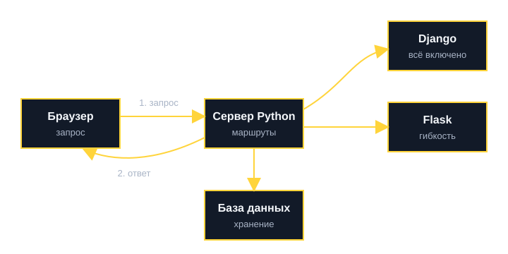

Обработка запросов
Фреймворк принимает HTTP-запрос и определяет, какой код должен его обработать.
Простой синтаксис, мощная экосистема и зрелые фреймворки делают Python удобным языком для входа в веб-разработку.
Только начинаете? Сначала пройдите уроки «С нуля», а незнакомые слова смотрите в словаре.
Backend — это часть приложения, которая работает на сервере: принимает запросы, обрабатывает логику, обращается к базе данных и отправляет ответ.
Фреймворк принимает HTTP-запрос и определяет, какой код должен его обработать.
Приложение читает и сохраняет пользователей, товары, статьи и другие данные через ORM или SQL.
Сервер возвращает HTML, JSON или файл — то, что в итоге видит пользователь.
Проверка данных, права доступа, обработка ошибок и подготовка корректного ответа.
Сервер принимает запросы, работает с данными и возвращает ответы. Вот что для этого делает код на Python.
Упрощённая цепочка от клика до ответа сервера.
Пользователь открывает страницу или отправляет форму.
Запрос уходит на сервер: метод, адрес и данные.
Django или Flask находит нужный маршрут и обработчик.
Код проверяет данные, читает или сохраняет информацию.
Сервер возвращает страницу, JSON или ошибку.
Что происходит за доли секунды после нажатия кнопки «Добавить задачу».
POST /tasks с заголовками, cookie и данными формы./tasks и метод POST указывают на вашу функцию, и она получает объект запроса.INSERT INTO tasks ... с параметрами, база возвращает номер новой строки.Ключевые причины, по которым язык остаётся популярным выбором для серверной разработки.
| Особенность | Почему это важно |
|---|---|
| Читаемый синтаксис | Код проще поддерживать и разбирать в команде, ниже порог входа для новичков. |
| Готовые фреймворки | Django и Flask закрывают большую часть типовых задач серверной разработки. |
| Экосистема библиотек | Легко подключить базу данных, аутентификацию, API-инструменты и аналитику. |
| Связь с анализом данных | Один язык можно использовать для веба, автоматизации и задач анализа данных. |
Минимальный сервер на Flask и базовая работа с SQLite — две важные точки входа.
from flask import Flask
app = Flask(__name__)
@app.route("/")
def home():
return "Привет, это Python-сервер!"
if __name__ == "__main__":
app.run()import sqlite3
conn = sqlite3.connect("app.db")
cursor = conn.cursor()
cursor.execute(
"CREATE TABLE IF NOT EXISTS users (id INTEGER PRIMARY KEY, name TEXT)"
)
cursor.execute(
"INSERT INTO users (name) VALUES ('Айгерим')"
)
conn.commit()
conn.close()Важно: примеры учебные, сервер в этом проекте не запускается. Код здесь можно только читать и копировать.
Понятия, которые помогают увереннее читать материалы по веб-разработке.
Серверная часть приложения, которая обрабатывает запросы, хранит данные и возвращает ответы.
Клиентская часть сайта: интерфейс, кнопки, формы и всё, что пользователь видит в браузере.
Протокол, по которому браузер и сервер обмениваются запросами и ответами.
Инструмент, который позволяет работать с базой данных через объекты и код вместо ручных SQL-запросов.
Интерфейс, через который одна программа может получать данные или функции от другой программы.
Лёгкая база данных, которая часто используется для учебных и небольших проектов.
Что можно сделать после изучения этого раздела.
Четыре вопроса по разделу. После ответа появится объяснение.
Проверено . Примеры рассчитаны на Python 3.12 и новее.
Когда основы понятны, следующий шаг — выбрать фреймворк: Django или Flask.
Вы открываете страницу, браузер отправляет запрос серверу, программа на Python находит данные и присылает ответ. Ниже то же самое списком.
